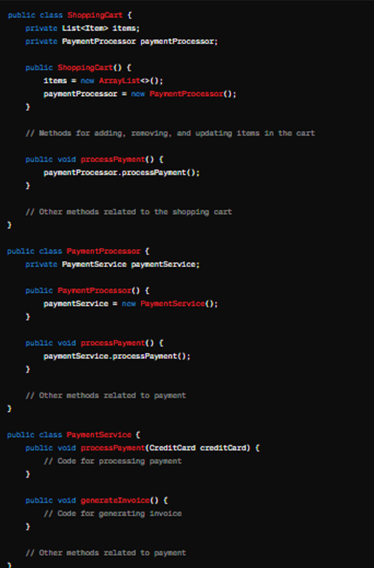
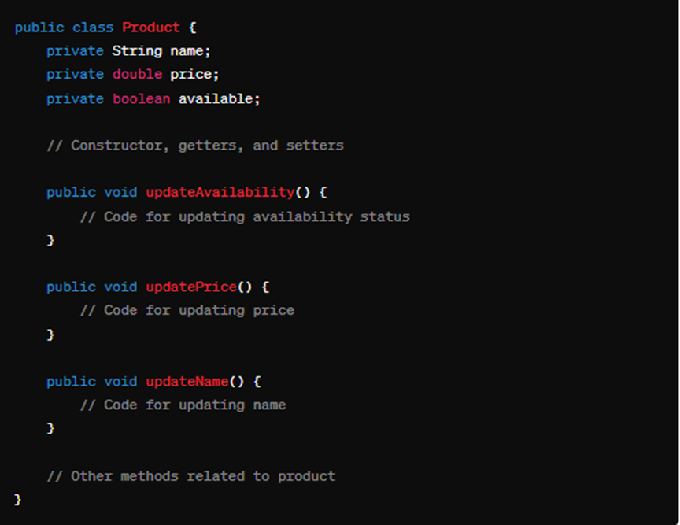

Divergent Change
Divergent Change adalah sebuah smell code dimana terjadinya banyak perubahan method yang dibuat terhadap salah satu class. Akibatnya, class tersebut terbebani dengan method method yang terlalu banyak yang dapat mengakibatkan munculnya bug atau error yang fatal. Solusi: memisahkan method tersebut dengan extract class.
Jika di dalam beberapa kelas terdapat method yang sama dapat dijadikan menjadi satu dengan proses inheritance (extract superclass atau subclass)
Before

After

Pada code diatas, class ShoppingCart bertanggung jawab untuk fungsi mengelola barang keranjang dan pembayaran. alhasil , ketika terjadi perubahan di fitur pembayaran, kita juga harus merubah code di class ShoppingCart. Untuk menghindari hal tersebut, kita dapat melakukan refactoring dengan metode extract class dimana fungsi pembayaran tersebut dipindahkan menjadi class tersendiri.
Shotgun Surgery
Shotgun Surgery adalah sebuah smell code dimana terjadinya perubahan method atau function di berbagai class untuk menyelesaikan satu fitur.Solusi: Menggunakan move method atau move field untuk memindahkan method yang sama ke class yang baru.
Before

After

Dalam contoh di atas, ketiga metode update Availability, updatePrice, dan updateName bertanggung jawab untuk memperbarui atribut-atribut yang berbeda dari objek Product. Jika kita ingin mengubah bagaimana atribut-atribut ini diperbarui, kita harus mengubah semua metode ini, yang tersebar di seluruh kode.
Parallel Inheritance Hierarchies
Parallel Inheritance Hierarchies adalah sebuah smell code dimana ketika kita membuat sebuah subclass A, kita juga harus membuat subclass B. Hal ini dapat mengakibatkan struktur codebase yang rumit untuk dikelola.Solusi: Pertama, buatlah subclass dari satu hirarki merujuk kepada subclass dari hirarki yang lain. Kemudian, hapuslah hirarki dalam kelas yang dirujuk, dengan menggunakan Move Method dan Move Field.
Before

After

Dalam contoh di atas, kita memiliki dua hierarki kelas yang terpisah: satu untuk hewan dan satu lagi untuk kendaraan. Namun, jika kita memperkenalkan sub-kategori seperti hewan yang dapat mengendarai kendaraan (misalnya, anjing yang dapat mengendarai mobil), kita akan menghadapi kesulitan. Kita mungkin harus menambahkan kelas baru seperti DogCar, yang akan menjadi bagian dari kedua hierarki.